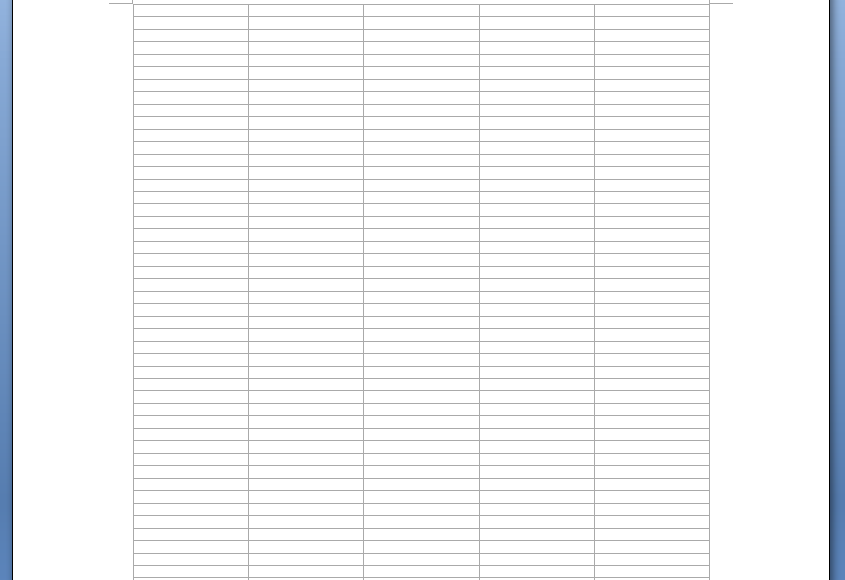
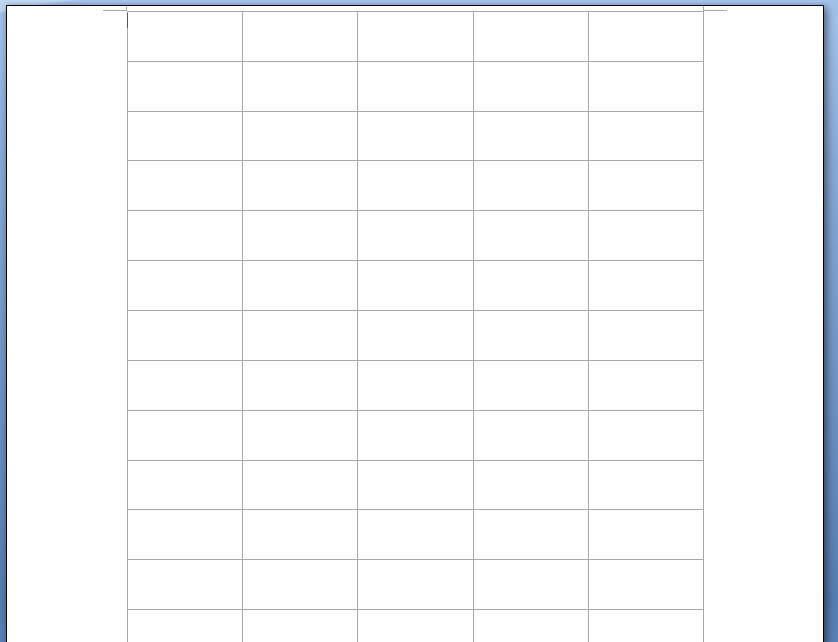

[Table of Contents] [docx version]
WordprocessingML Reference Material - Table of Contents
displayHorizontalDrawingGridEvery (Distance between Horizontal Gridlines)
This element specifies the number of horizontal grid units defined using the drawingGridHorizontalSpacing element (§2.15.1.44) which shall be allowed between subsequent visible horizontal drawing grid lines in this document, if gridlines are being shown. [Note: The display of gridlines is an application-level setting not specified in this Office Open XML Standard. end note] The drawing grid is a grid which may be used by applications to help position floating objects in the document.
If this element is omitted, then gridlines shall be displayed for each horizontal grid unit.
[Example: Consider the image below illustrating a WordprocessingML document in which all horizontal grid units are visible (the default setting):

If the gridlines in this document shall only be displayed for every 4th horizontal drawing gridline, that requirement would be specified using the following WordprocessingML in the document settings:
<w:displayHorizontalDrawingGridEvery w:val="4" />
The resulting grid would look like the following:

The displayHorizontalDrawingGridEvery element has its val attribute equal to 4, therefore every fourth gridline is displayed in the document when the drawing grid is turned on. end example]
|
Parent Elements |
|
settings (§2.15.1.78) |
|
Attributes |
Description |
|
val (Decimal Number Value) |
Specifies that the contents of this attribute will contain a decimal number.
The contents of this decimal number are interpreted based on the context of the parent XML element.
[Example: Consider the following numeric WordprocessingML property of type ST_DecimalNumber:
<w:… w:val="1512645511" /> The value of the val attribute is a decimal number whose value must be interpreted in the context of the parent element. end example]
The possible values for this attribute are defined by the ST_DecimalNumber simple type (§2.18.16). |
The following XML Schema fragment defines the contents of this element:
<complexType name="CT_DecimalNumber">
<attribute name="val" type="ST_DecimalNumber" use="required"/>
</complexType>